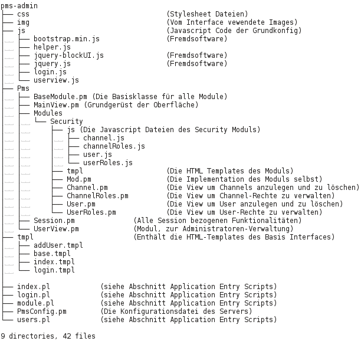
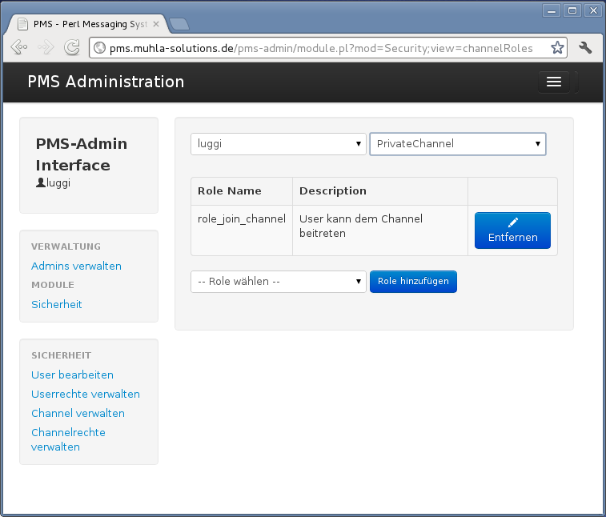
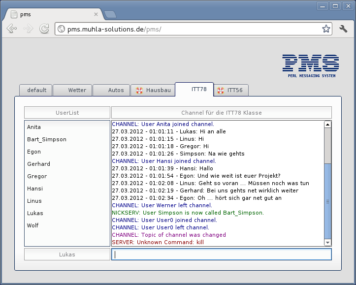

Einleitung
Aufgabenstellung
Im Rahmen der Technickerausbildung im Schuljahr 2011/12 in der Klasse ITT 7/8 wurde die Aufgabe gestellt, eine in Perl realisierte Anwendung mit Datenbankanbindung zu planen, entwickeln und vorzustellen. Als Thema der Projektarbeit haben wir uns das Perl-Messaging-System, kurz P.M.S. ,einen Chatserver mit Client und Administrationsinterface, ausgesucht.
Dieses Dokument beschreibt die Funktionsweise und Implementation des Perl Messaging Systems, also den Core-Server, die Erweiterung durch Module, das Admin Interface und den Chat Client.
Die Arbeiten an der Software wurden gemeinschaftlich von Lukas Michalski, Benjamin Zeller und Thorsten Schwalb durchgeführt.
Zielsetzung Core-System
Das meisste Augenmerk lag hierbei auf dem Herzstück des PMS , dem Core.
Die Hauptziele bei der Impementation des Cores waren wie folgt:
-
Implementation eines Multi-Channel Multi-User Chatservers
-
Quasi parallele Verarbeitung mehrerer Connections
-
Schnelle Asynchrone Verarbeitung der Commands, durch Eventbasierte Programmierung
-
Erweiterbarkeit durch Modularisierung
-
Erweiterbarkeit der Userfunktionen durch Plugins
-
Erweiterbarkeit der Connectivity durch sogenannte Connection Provider
-
-
Implementation eines einfachen Chatprotokolls
-
Möglichst lose Objektkopplung zwischen den Plugins und dem Core
Alle dieser Ziele wurden bis zum Projektende in die Tat umgesetzt und liegen in der aktuellen Softwareversion vor.
Zielsetzung Erweiterungs-Module
Es sollten mehrere Erweiterungsmodule entwickelt werden um zu demonstrieren auf welche Weise es möglich ist den P.M.S. Server zu erweitern. Vor allem das Security Modul ist hierbei hervorzuheben, da es fast die komplette Palette der Möglichkeiten ausnutzt.
Die Ziele waren wie folgt:
-
Security
Rechteverwaltungssystem und registrierte User, einteilung der User in Gruppen und zuweisung von Rechten an die Gruppen
-
Statistik Modul
Statistiken zB über die Aufenthaltsdauer eines Users, wieviele Messages er schreibt usw.
-
Backlog Modul
Die Messages eines Channels werden in der Datenbank hinterlegt und werden an einen User gesendet der den Channel betritt, damit dieser weiss was vorher gesprochen wurde.
Im Rahmen des Projekts wurden die Ziele wie folgt umgesetzt:
-
Security Modul
Bis auf die Möglichkeit Gruppen anuzlegen und zu verwalten wurde das Modul vollständig umgesetzt
-
Backlog Modul
Wurde komplett umgesetzt
-
Statistik Modul
Konnte im Zeitrahmen des Projektes nicht umgesetzt werden
Zielsetzung HTML5 - Chat Client
Der Chat Client ist die Referenzimplementation eines Clients, basierend auf einer Kombination von Html und Javascript.
Die Ziele waren wie folgt:
-
Komplette Referenzimplementation des P.M.S. Chatprotokolls
-
Die Möglichkeit in mehreren Channeln gleichzeitig chatten zu können
-
Moderne und ansprechende HTML5 basierte Oberfläche
Alle dieser Ziele wurden bis zum Projektende in die Tat umgesetzt und liegen in der aktuellen Softwareversion vor.
Zielsetzung Admin-Interface
Das Admin Interface wird benötigt, um auf die von Modulen bereitgestellten Daten zugreifen zu können, oder diese zu konfigurieren. Die Implementierung erfolgte in Perl, Javascript und Html.
Die Ziele waren wie folgt:
-
HTML und Javascript basierte Oberfläche
-
Modularer Aufbau
-
Chatserver Security Modul Verwaltung
-
Chatserver Backlog Modul Verwaltung
-
Chatserver Statistik Modul Verwaltung
Im Rahmen des Projekts wurden die Ziele wie folgt umgesetzt:
-
HTML und Javascript basierte Oberfläche
Komplett implementiert
-
Modularer Aufbau
Wurde erfolgreich verwirklicht
-
Chatserver Security Modul Verwaltung
Bis auf die Gruppenverwaltung implementiert
-
Chatserver Backlog Modul Verwaltung
Konnte im Zeitrahmen des Projektes nicht umgesetzt werden
-
Chatserver Statistik Modul Verwaltung
Konnte im Zeitrahmen des Projektes nicht umgesetzt werden
Implementation, Funktionsweise und Design des Core-Systems
Allgemein
Die komplette Implementation des Cores erfolgte in Perl und wurde als reine objektorienterte, eventbasierte Software konzipiert. Der Core ist die zentrale Einheit des P.M.S. es benötigt bis auf einen ConnectionProvider keine Erweiterungsmodule um eine Basis Chat Funktionalität zu Verfügung zu stellen.
Bei der Implementation wurde auf ein modulares Design wert gelegt. Der Server ist somit beliebig erweiterbar. Die Module werden in der Konfigurationsdatei hinterlegt, und vom Server zur Laufzeit geladen und initialisiert.
Es gibt hierbei zwei Arten von Modulen:
|
ConnectionProvider
|
Der ConnectionProvider macht es möglich, den Core über beliebige Kommunikationswege zu verbinden, wie zB TCP-Sockets oder Websockets. Selbst ausgefallene Möglichkeiten wie zB HTTP-Server Push wären denkbar. |
|
Plugins
|
Plugins sind eine Möglichkeit den Server um diverse Funktionalitäten zu erweitern wie z.B. einen Backlog oder selbst ein Chat-Bot (maschineller User) sind möglich. |
Es wäre denkbar selbst das Chat Protokoll als Modul zu implementieren, dies war jedoch im Rahmen des Projekts nicht möglich.
MODUL BILD
Verwendete Fremdsoftware im Core
-
Das AnyEvent Modul stellt den vom P.M.S. verwendeten Event-Loop und einige Helferklassen bereit.Es ermöglicht eine sogenannte asynchrone-Programmierung, diese versetzt den P.M.S. Core in die Lage mehrere Operationen quasi-parallel auszuführen. So muss man zum Beispiel nicht darauf warten, bis eine Schreiboperation auf einen Dateideskriptor beendet ist, sondern das System kümmert sich um dessen Fertigstellung. Dabei kann man jedem asynchronen Aufruf diverse Callback Funktionen mitgeben, die nach erfolgreicher Fertigstellung des Befehls, oder sogar im Fehlerfall aufgerufen werden.
-
Dieses Modul stellt das sogenannte Observer-Pattern zur Verfügung, das es uns ermöglicht interne Signale (Events) zu verschicken und zu verarbeiten. Es ermöglicht dem Core komplett ohne das Wissen über eventuell geladene Module, oder deren Voraussetzungen zu operieren.
Interne Schnittstellen
Signale
Signale und Callbacks werden von uns verwendet um Objekten eine Möglichkeit zu geben sich untereinander
zu Verständigen, ohne jedoch zuviel vom eigentlichen Kommunikationspartner wissen zu müssen.
Diese Schnittstellen-Technik ist auch als Observer-Pattern bekannt
[http://de.wikipedia.org/wiki/Observer_(Entwurfsmuster)]
;.
Als Ausgangspunkt wird von uns das auch dem CPAN nachinstallierte Modul Object::Event verwendet. Da dies aber keinerlei Möglichkeiten hatte zu testen ob ein bestimmtes Signal eigentlich existiert oder nicht, musste die Klasse noch erweitert werden.
Alle Objekte die Signale versenden wollen, müssen vom Objekt Pms::Core::Object ableiten und in einem globalen Hash %pmsEvents alle von ihm versendeten Signale hinterlegen:
#!/usr/bin/perl -w package MyPackage; use Pms::Core::Object; use strict; use utf8; our @ISA = qw(Pms::Core::Object); our %PmsEvents = ( 'signal1' => 1, 'signal2' => 1 );
Diese Signale können mit beliebigen Callbacks verknüpft und es können auch mehrere Callbacks pro Signal registriert werden. Die Callbacks werden in der gleichen Reihenfolge aufgerufen, wie sie beim Sender-Objekt registriert werden. Es ist ausserdem möglich Argumente mit an die Callbacks zu übergeben.
#Code im Sender Objekt: sub anyOperation{ #aulösen des Signals: $self->emitSignal('some_signal',"arg1","arg2"); } #Code im Receiver Objekt: sub createConnections{ my $self = shift; my $signalSender = shift; $signalSender->connect( some_signal => $self->_callback() ); } sub _callback{ my $self = shift; return sub{ my $eventChain = shift; #Die Event Chain über die das Event abgebrochen werden kann my $arg1 = shift; my $arg2 = shift; #do something } }
Beim connecten der Signale, wir automatisch in der kompletten Hirarchie des Objekts nach der Definition eines Signals im PmsEvents Hash gesucht. Somit können auch Signale von übergeordneten Klassen verwendet werden, ohne diese noch einmal im Hash angeben zu müssen.
Events
Jedes Modul kann sich für bestimmte Server Events registrieren, es hinterlegt dabei eine Callback-Funktionen die beim auftreten dieses Events ausgeführt wird. Server Events sind hierbei nichts weiter als Signale die von der Application Klasse versendet werden, mit der Besonderheit, das sie immer ein Event Objekt als ersten und einzigen Parameter mit schicken.
sub createConnections{ my $self = shift; #Weist den Server an das Event client_connect_success mit dem Callback zu verbinden $self->{m_parent}->connect( client_connect_success => $self->_callback() ); } sub _callback{ my $self = shift; return sub{ my $eventChain = shift; #Die Event Chain über die das Event abgebrochen werden kann my $eventType = shift; #Das Event Objekt selbst ,das diverse Informationen enthält #Eine Message an den User schicken $eventType->connection()->postMessage( Pms::Prot::Messages::serverMessage("default","Hallo vom Callback") ); } }
Folgende Events stehen zur Verfügung:
| Name | Beschreibung |
|---|---|
client_connect_request |
Ein neuer Client versucht sich zu verbinden |
client_connect_success |
Ein neuer Client hat eine Verbindung aufgebaut |
client_disconnect_success |
Ein Client hat die Verbindung geschlossen |
message_send_request |
Ein Client versucht eine Message zu senden |
message_send_success |
Ein Client hat eine Message gesendet |
join_channel_request |
Ein Client möchte einen Channel betreten |
join_channel_success |
Ein Client hat einen Channel betreten |
leave_channel_success |
Ein Client hat einen Channel verlassen |
create_channel_request |
Ein Client möchte einen Channel erstellen |
create_channel_success |
Ein Client hat einen Channel erstellt |
channel_close_success |
Ein Channel wurde geschlossen |
change_nick_request |
Ein Client versucht seinen Nickname zu ändern |
change_nick_success |
Ein Client hat seinen Nickname geändert |
change_topic_request |
Ein Client versucht ein Channel Topic zu ändern |
change_topic_success |
Ein Client hat ein Channel Topic zu geänderd |
execute_command_request |
Ein Client versucht ein Command auszuführen |
Jedes Event, das über ein "_request" Postfix verfügt, kann in der Callback Funktion unter Angabe eines Grundes zurückgewiesen werden, die weitere Verarbeitung wird somit abgebrochen und der User bekommt eine entsprechende Meldung darüber. Hiermit wird es nicht nur ermöglicht, auf Events zu reagieren sondern diese sogar von ausserhalb des Cores zu steuern. Diese Funktionalität wird zum Beispiel im Security Modul verwendet um Userrechte zu überprüfen, allerdings könnte man damit auch einfachere Wortfilter erstellen, die zB Messages mit Schimpfwörtern herausfiltern.
sub _callback{ my $self = shift; return sub{ my $eventChain = shift; #Die Event Chain über die das Event abgebrochen werden kann my $eventType = shift; #Das Event Objekt selbst ,das diverse Informationen enthält #Setzt die Error Message die an den Client gesendet wird $eventType->reject("Eine beliebige Error Message"); #Stoppt das Event $eventChain->stop_event; } }
Externe Schnittstellen
Allgemein
Wie in der Einleitung schon kurz erwähnt, ist die komplette Kommunikation im Core modular aufgebaut. Hierfür sind zwei abstrakte Klassen im Core vorhanden, die die Implementationsdetails der jeweiligen Kommunikationsbackends "verstecken".
-
Der ConnectionProvider ist die Abstrakte Form eines Server-Sockets, wie man ihn von der normalen TCP Programmierung kennt: Er nimmt Verbindungsversuche an und informiert den Server über ein Signal (connectionAvailable) darüber, das neue Connections vorliegen. Hierbei wird komplett abstrahiert wie dieser Ablauf im Hintergrund funktioniert. Ob dies nun ein HTTP Requst oder ein normaler TCP-Socket ist, ist für den Core komplett irrelevant.
-
Die Connection Klasse hat zwei Aufgaben:
-
Sie abstrahiert die darunterliegende Kommunikation
-
Sie identifiziert den verbundenen User und weiss dessen Nicknamen
Am besten kann man sich die Connection Klasse als einen Socket vorstellen, sie empfängt und schickt Daten entweder synchron oder asynchron, je nachdem welche Funktion verwendet wurde. Auch hier ist das darunterliegende Protokoll irrelevant. Unter Zuhilfenahme einer SessionId und eines Mailservers könnte man sogar, eine Kommunikation per EMail über diese Klasse realisieren.
-
Die verwendeten Backends werden über die Konfigurationsdatei festgelegt und zur Laufzeit geladen und initialisiert. Standardmässig sollten sie im Packet Pms::Net untergebracht sein, können aber durch Verwendung des FQN in der Konfigurationsdatei von überall geladen werden (solange sie sich im Include Pfad befinden)
Backend Implementation Websocket
Die Referenzimplementation des Backends ist auf dem Modul AnyEvent::Handle und dem WebSocket Protokoll aufgebaut, das es dem Server ermöglicht HTML5-WebSocket Connections entgegenzunehmen, somit kann jeder mit einem HTML5-fähigen Browser, ohne etwas installieren zu müssen, eine Verbindung zum Chatserver aufbauen.
|
|
Im Rahmen der Projektarbeit, wurde nur der Chromium Browser getestet. |
Verwendete Fremdsoftware
-
Ein Teil des AnyEvent Frameworks, das es ermöglicht Socket Handles mit unserer asynchronen Programmierung zu verbinden. Anstatt in einem blockierenden System-Call auf neue Daten zu warten, führt der EventLoop unsere Callbacks aus wenn neue Daten ankommen.
-
Ein Teil des AnyEvent Frameworks, das es ermöglicht einen TCP-Server mit unserer asynchronen Programmierung zu verbinden. Anstatt in einem blockierenden System-Call auf neue Verbindungen zu warten, führt der EventLoop unsere Callbacks aus wenn neue Daten ankommen.
-
Ein aus dem CPAN installiertes Modul, implementiert das Websocket Protokoll. Hierbei wird ein einfacher HTTP-Handshake an den Server gesendet: GET /chat HTTP/1.1 Host: server.example.com Upgrade: websocket Connection: Upgrade Sec-WebSocket-Key: dGhlIHNhbXBsZSBub25jZQ== Origin: http://example.com Sec-WebSocket-Protocol: chat, superchat Sec-WebSocket-Version: 13 Der Server antwortet dementsprechend und wechselt von der HTTP in die Socket Kommunikation. Danach kann man die Verbindung wie eine normale TCP Verbindung verwenden. Weiterführende Informationen: http://de.wikipedia.org/wiki/WebSocket
Line Protokoll
Da man, wie bei jeder Stream basierten Verbindung (wie zB Tcp oder Websocket), nicht weiss wann eine Nachricht komplett angekommen ist oder ob man noch auf Daten warten muss, braucht man ein Protokoll das einem hilft Anfang und Ende der Nachrichten zu erkennen. Hierbei haben wir uns für Netstring, ein einfaches Textbasiertes Protokoll entschieden. Eine Nachricht im Netstring Format hat diese Darstellung:
Die Zahl am Beginn der Nachricht, beschreibt wieviel Zeichen sich zwischen dem beiden Delimitern : und , befinden. Hierbei ist vollkommen egal welche Zeichen, sogar ein weiterer Netstring könnte eingebettet werden oder sogar binäre Daten. Letzteres ist aber aufgrund von Einschränkungen durch das WebSocket Protokoll nicht möglich, da dies nur UTF-8 Character zulässt. Nun ist es ein leichtes für den Server zu erkennen wann eine Nachricht endet und wann er noch warten muss:
FLOWCHART Netstring
Weitere Informationen zu Netstring, findet man in der offiziellen Dokumentation: http://cr.yp.to/proto/netstrings.txt
Chat und Message Protokoll
Damit Client und Server richtig miteinander kommunizieren können, haben wir ein Chatprotokoll festgelegt, und einen eigenen handgeschriebenen Parser dafür entwickelt. Die Implementierung befindet sich im Pms::Prot::Parser Modul.
Der Aufbau einer Message hat immer den gleichen Aufbau:
Folgende Regeln müssen zutreffen:
-
Eine Message startet immer mit einem /
-
Nach dem / muss sich ein Token befinden (Kommandoname),
-
Ein Token startet immer mit einem Buchstaben und kann nur aus Buchstaben und Zahlen bestehen
-
Alle Argumente sind duch Leerzeichen getrennt
-
Ein Argument kann entweder ein String oder eine Nummer sein
-
Ein String startet entweder mit einem " oder einem ' , das gleiche Zeichen muss verwendet werden um den String zu beenden
-
Kommt das Escape Zeichen im String noch einmal vor muss es mit einem \ escaped werden.
-
Eine Nummer kann mit folgenden Zeichen beginnen: +,-,. oder einer Nummer
Wenn der Parser keinen Fehler findet, wird er einen Hash zurückgeben der den Kommandonamen (das Token nach dem /) und die Argumente als Array beinhält. Dieses wird dann an das Server-Objekt(Pms::Application) zur weiteren Verarbeitung weitergegeben.
Das Server Object
Das Herzstück, das Pms::Application Modul verbindet die bisher beschriebenen Funktionalitäten miteinander. Es sorgt dafür, das die ConnectionProvider und Module geladen und initialisiert werden.
Der Server ist ausserdem dafür zuständig, die einzelnen Connections anzunehmen und zu verwalten, Channels zu erstellen und zu löschen und die Messages richtig zu verteilen.
Empfang und Abarbeitung von Messages
Nachdem, der Server von einer der bestehenden Connections ein dataAvailable Signal erhalten ,die Daten ausgelesen und sie wie in den Kapiteln "Line Protokoll" und "Chat und Message Protokoll" verarbeitet hat, liegt ein Hash mit folgendem Aufbau vor:
( name => "Kommandoname", args => [ arg0, arg1, #,...., argn ] );
Der Server sucht nun in einem internen Hash, ob ein Callback für dieses Kommando hinterlegt wurde, und führt es aus. Als Parameter für den Callback wird immer als erstes Argument das Connection Objekt übergeben, das das Kommando ausführt, danach das Array mit den Argumenten aus dem Hash.
User-Schnittstelle (Kommandos)
Der Core Server kommt von Haus aus mit einigen vordefinierten Kommandos:
-
/send "channel" "message"
Eine Chatmessage, die an einen Channel geschickt wird -
/join "channel"
Einen Channel betreten -
/leave "channel"
Einen Channel verlassen -
/create "channel"
Einen neuen Channel erstellen -
/list
Eine Liste von bestehenden Channeln abfragen -
/nick "newname"
Den eigenen Usernamen ändern -
/users
Eine Liste von Usern erhalten (internes Kommando) -
/topic "channel" "topic"
Die Überschrift/ das Thema eines Channels ändern
Erweiterungs API für Module
Eine weitere wichtige Aufgabe, ist die Bereitstellung einer API für die Erweiterung durch Module. Dazu gehören nicht nur die Events, die durch die Module beinflusst werden können, sondern auch eine Möglichkeit eigene "Chat-Kommandos" zu registrieren, die vom User oder der Clientapplikation aufgerufen werden können. Ein Modul muss dazu nur ein Kommando mit einer dazugehörigen Callback-Funktion registrieren, den Rest macht das Server Objekt von alleine:
sub createCommands{ my $self = shift; my $srv = shift; #Das Server Objekt $srv->registerCommand("ping",$self->_pingCallback()); } sub _pingCallback{ my $self = shift; return sub{ my $connection = shift; $connection->postMessage(Pms::Prot::Messages::serverMessage("default","Pong")); } }
Führt der User jetzt das Kommando /ping aus, wird der Server im "default"
[Der default Channel ist das Hauptfenster in dem der Serverprozess Nachrichten schickt]
Channel mit "Pong"
antworten.
Das verarbeiten und stoppen von Events wurde im Kapitel Events schon beschrieben. Eigene Events zu registrieren ist jedoch nicht möglich,allerdings kann über das execute_command_request Event die Ausführung eines von einem Modul registrierten Kommandos beinflusst werden.
Laden der Module
Das Server Objekt, lädt die Module zur Laufzeit, welche Module der Server lädt, in welcher Reihenfolge und welche Abhängigkeiten die Module untereinander haben, werden in der Server Konfigurationsdatei hinterlegt. Initialisierung und Shutdown der Module muss in den Konstruktor und Destruktor Funktionen durchgeführt werden, ansonsten werden keine Anforderungen an die API der Module erstellt. Der Server übergibt als erstes Argument an den Konstruktor immer eine Referenz auf sich selbst und als zweites Argument den Konfigurationshash des Moduls, dieser wird aus der Konfigurationsdatei gelesen.
#!/usr/bin/perl -w package Pms::Modules::Ping; use strict; use Pms::Application; use Pms::Prot::Messages; sub new{ my $class = shift; my $self = {}; bless ($self, $class); $self->{m_parent} = shift;$self->{m_config} = shift;
$self->createCommands(); return $self; } sub DESTROY{ my $self = shift; $self->shutdown(); } sub createCommands{ my $self = shift; my $srv = shift; #Das Server Objekt $srv->registerCommand("ping",$self->_pingCallback());
} sub _pingCallback{
my $self = shift; return sub{ my $connection = shift; $connection->postMessage( Pms::Prot::Messages::serverMessage("default","Pong") ); } } sub shutdown{ my $self = shift; warn "Shutting Down"; } 1;
| Das ServerObjekt ist immer der erste Parameter | |
| Der Konfigurationshash des Moduls | |
| Registrierung des ping Kommandos im Server | |
| Callback Funktion für das ping Kommando |
Security Module
Allgemein
Um eine sinnvolle Anbindung an eine Datenbank und die Chatfunktion um Rechte zu erweitern wurde das Security Modul entwickelt. Das Security Modul führt zwei Arten von Rechten ein:
-
Globale Rechte
Diese Art von Rechten legt fest ob ein User z.B. einen Channel erstellen, oder einen Channel löschen kann (das löschen wurde nicht mehr implementiert). Also Aktionen ausserhalb der Channel.
-
Channel Rechte
Hier wird festgelegt welche Rechte ein User in einem bestimmten Channel hat. Es gibt pro User und Channel ein eigenes Rechtepacket, oder falls nichts in der Datenbank hinterlegt ist wird ,je nach Art des Channels, ein Default Packet erstellt.
Verwendete Fremdsoftware
-
Ein aus dem CPAN installiertes Modul. Es ermöglicht eine Asynchrone Verbindung zur Datenbank aufzubauen. Datenbankoperationen die sehr lange dauern, können so nicht den Mainloop blockieren und der Server kann eingehende Events schneller verarbeiten. Da Perl echte Threads fehlen, startet das AynEvent::DBI Modul kleine Hilfsprozesse, die die Queries entgegennehmen und ausführen, ist die Datenbankoperation fertig wird im Hauptprogramm ein mitgegebenes Callback ausgeführt.
Funktionsweise
Das Security Modul nützt alle Möglichkeiten des Core Servers um ihn zu erweitern. Es registriert diverse Befehle und behandelt fast alle Events die der Server schickt. Nachdem ein User erfolgreiche eine Verbindung zum Server aufgebaut hat, bekommt er ein Standard Rechtepacket zugewiesen, das es ihm möglich macht eigene Channels zu erstellen. Hat er einen Channel erstellt, ist er dort Channel-Admin solange er den Channel nicht verlässt, er hat in diesem Channel alle Rechte. User die den Channel nur betreten, bekommen ein Standard Channel Rechtepacket, sie dürfen den Channel standardmässig betreten und darin sprechen.
Das Security Modul führt aber noch eine weitere Art von Channels ein, sogenannte persistente Channel. Diese sind in der Datenbank hinterlegt und werden beim starten des Servers automatisch erzeugt. Um in einen persistenten Channel betreten zu können benötigt ein User extra Rechte, hier wird kein standard Regelpacket erzeugt, hat der User keine Rechte für diesen Channel in der Datenbank ist es auch nicht möglich den Channel zu betreten.
User-Schnittstelle (Kommandos)
-
/identify "username" "password"
Identifiziert den User beim Security Modul, die globalen Rechte des Users werden aus der DB geladen -
/giveOp "channel" "username"
Ein Channeladministrator, hat die Möglichkeit einem anderen User im Channel Administratorenrechte zu geben -
/takeOp "channel" "username"
Einen Channeladministrator kann Admin Rechte eines anderen Users entfernen
Administrations-Interface
Allgemein
Um die Module und deren Einstellungen ,wie zB die Rechte des Security Moduls, zu verwalten wurde ein Webinterface auf Basis von Html, Javascript und Perl-CGI Programmierung entwickelt. Als Datenbankbackend kommt natürlich MySQL zum Einsatz.
Aufbau des Source Codes

Fremdsoftware
-
JSON (2.53) und JSON::XS (2.27)
Aus dem CPAN nachinstallierte Module, sie stellen einen Parser und Serializer für JSON Dokumente bereit. JSON ist ein leichtgewichtiges Datentransferformat, das das Webinterface verwendet um Daten per AJAX vom Server abzuholen.
-
Aus dem CPAN nachinstalliertes Modul, es ermöglicht die strikte Trennung von HTML und Perl Code. Zu diesem Zweck wird der HTML Code in sogenannte Template Dateien ausgelagert, in denen bestimmte "Tags" hinterlegt sind. Diese "Tags" kann man durch dynamische Daten ersetzen.
-
JQuery ist ein Javascript Framework, das es einfach macht Browserübergreifendes Javascript zu schreiben, in unserer Software kommmt es hautpsächlich bei AJAX-Datenabfragen und beim dymamischen ändern des DOM-Trees zum Einsatz.
-
Bootstrap ist ein Html, Css und Javascript Framework, das vordefinierte Elemente liefert, um das Styling und Erstellen von HTML basierten Interfaces zu erleichtern. Die komplette Ui des Admin Interfaces wurde mit Bootstrap erstellt.
Implementation und Design
Auch das Admin Interface ist wie der Server modular aufgebaut. Server Module, die eine Konfiguration benötigen, die über die Fähigkeiten einer Konfigurationsdatei hinausgehen, müssen nur ein Modul/Plugin für das Admin Interface liefern und einige bestimmte API Vorgaben erfüllen.
Application Entry Scripts
Es gibt insgesamt nur 4 Skripte, die der HTTP-Server direkt ausführen kann, diese leiten die Requests dann an interne Module weiter oder bearbeiten sie direkt selbst:
-
login.pl
Ist für Login und das erstellen der Session zuständig, gibt es schon eine bestehende Session, wird der Client auf das index.pl Script umgeleitet.
-
index.pl
Zeigt die Startseite und das Menu an.
-
module.pl
Dieses Skript behandelt Requests an die Module -> s.a. Module Funktionsweise
-
users.pl
Ist dafür zuständig neue Admin User über die Oberfläche anzulegen und zu verwalten.
Funktionsweise von Modulen
Wie schon im vorherigen Abschnitt erwähnt, werden Requests an die Module von Application-Entry Skript module.pl gesteuert. Hierbei wird vorausgesetzt, das es ein Module gibt das folgende Voraussetzungen erfüllt:
-
Ein Modul im Verzeichnis Pms/Modules/<PluginName> mit dem Namen Mod.pm
Für das Security Modul würde das bedeuten: Pms/Modules/Security/Mod.pm
-
Dieses Module implementiert die Basisklasse Pms::BaseModule
-
Es wurden alle abstrakten Funktionen implementiert.
Für genauere Informationen wie ein Modul implementiert wird, beachten Sie bitte die API Dokumentation.
Es gibt zwei Arten von Requests an ein Modul: 1. Die Anforderung einer neuen HTML-Seite, also eine View 2. Ein Datenrequest das per AJAX geschickt wird.
Welche Art von Request durchgeführt wird und an welches Modul es geschickt wird, wird per GET Daten in der URL entschieden:
http://hostname/module.pl?mod=<ModuleName>;view=<ViewName>
Wie man im Beispiel erkennen kann, wird über die mod Variable die Bezeichnung des Moduls an das module.pl Skript übergeben, dieses versucht dann zur Laufzeit das Modul zu laden und ruft die Funktion renderContent($viewName) auf. Diese Funktion sollte den Inhalt der HTML Seite zurückgeben, dieser Inhalt wird dann in den Datenbereich des Haupt-Templates eingebettet.
http://hostname/module.pl?mod=<ModuleName>;action=<ActionName>
Die Url für einen Daten-Request ist im Aufbau der View-Request ähnlich, allerdings hat sie anstatt dem view Parameter, einen action Parameter. Das Skript module.pl lädt das Plugin in der gleichen Weise wie bei der View, führt hier jedoch die Funktion dataRequest($actionName) aus. Daten, die an die dataRequest Funktion selbst übergeben werden, müssen als JSON-Dokument per POST Request übergeben werden. In der aktuellen Konfiguration werden unbekannte GET-Parameter einfach ignoriert.

Graphische Benutzeroberfläche
Allgemein
Damit Benutzer über den Core miteinander kommunizieren können, wurde dieser Chat Client entwickelt.
Fremdsoftware
-
Qooxdoo JavaScript Framework SDK v1.6
qooxdoo ist ein clientseitiges Framework für den Bau grafischer Benutzeroberflächen für Webanwendungen mit Hilfe des Programmierkonzepts Ajax. qooxdoo ist ein Rahmenwerk für die Entwicklung von Anwendungen, die der Benutzer über seinen Webbrowser aufruft und bedient. Es stellt in einer Programmbibliothek zahlreiche auf der Skriptsprache JavaScript basierende Komponenten zur Verfügung, die Aussehen und Bedienung von Webanwendungen an klassische Desktop-Anwendungen angleichen. Dabei verwendet es das Programmierkonzept Ajax, das es erlaubt, Benutzer- eingaben zu verarbeiten, ohne die gesamte Webseite neu zu laden.
Implementation und Design
Die komplette Implementation erfolgte in Javascript und als Framework wurde Qooxdoo verwendet. Es wurden alle Commands und Messages des Server implementiert.
Genauere Implementationsdetails des Chatclients werden in diesem Dokument nicht weiter behandelt, da die graphische Oberfläche in JavaScript entwickelt wurde und nicht Gegenstand des Unterrichtes ist.

Systemvoraussetzungen
Allgemein
Um diese Software nutzen zu können, müssen diverse Voraussetzungen erfüllt sein. Im weiteren wird ein System beschrieben, welches erfolgreich getestet wurde.
Core - System
Betriebssystem: ArchLinux x64
-
Repositories: core-remote
-
Paketauswahl: base, standard
Zu installierende Pakete
-
base-devel
( pacman -S base-devel ) ( all ) -
openssh
( pacman -S openssh ) -
git
( pacman -S git ) -
mysql
( pacman -S mysql ) -
perl-dbd-mysql
( pacman -S perl-dbd-mysql )
Perl Pakete
-
AnyEvent
-
AnyEvent::DBI
-
Object::Event
-
Protocol::WebSocket
Quellen
-
git://gitorious.org/p-ms/pms-server.git
[/srv/project]$ git clone git://gitorious.org/p-ms/pms-server.git
Datenbank
-
MySQL DB anlegen
- mysql -u root -p
Enter password:
mysql> create database pms;
Query OK, 1 row affected (0.00 sec)
mysql> grant usage on *.* to pms@localhost identified by 'pass';
Query OK, 0 rows affected (0.00 sec)
mysql> grant all privileges on pms.* to pms@localhost;
Query OK, 0 rows affected (0.00 sec)
-
MySQL Dump importieren
-
PmsConfig.pm konfigurieren
Bereich %baseDBHash einrichten
Admin - Interface
Zu installierende Pakete
-
lighttpd
(pacman -S lighttpd)
Perl Pakete
-
HTML::Template
-
CGI::Session
-
JSON
Quellen
-
git://gitorious.org/p-ms/pms-admin.git
[/srv/project]$ git clone git://gitorious.org/p-ms/pms-admin.git
Datenbank
-
PmsConfig.pm konfigurieren
HTTP-Server
-
Konfiguration des Servers
( nano /etc/lighttpd/lighttpd.conf )
server.port = 80
server.username = "http"
server.groupname = "http"
server.document-root = "/srv/http"
server.errorlog = "/var/log/lighttpd/error.log"
dir-listing.activate = "enable"
index-file.names = ( "index.html", "login.pl" )
mimetype.assign = ( ".html" => "text/html",
".txt" => "text/plain",
".jpg" => "image/jpeg",
".png" => "image/png",
".css" => "text/css",
".js" => "text/javascript",
"" => "text/html"
)
server.modules = ( "mod_cgi" )
$HTTP["url"] =~ "^/pms-admin/" {
cgi.assign = ( ".pl" => "/usr/bin/perl" )
}
-
Standardbenutzer:
-
luggi
-
zbenjamin
-
-
Standardpasswort:
-
passwort
-
HTML5 - Chat Client
Zu installierende Pakete
-
unzip
( packer -S unzip ) -
python2
( packer -S python2 )
Quellen
-
git://gitorious.org/p-ms/pms-webclient-qx.git
[/srv/project]$ git clone git://gitorious.org/p-ms/pms-webclient-qx.git
Framework
-
Installation vom Qooxdoo Framework
[/srv/packages]$ wget http://downloads.sourceforge.net/qooxdoo/qooxdoo-1.6-sdk.zip
[/srv/packages]$ unzip qooxdoo-1.6-sdk.zip
[/srv/packages]$ mv qooxdoo-1.6-sdk /opt/
[/srv/packages]$ cd /srv/project
[/srv/project]$ mkdir qooxdoo
[/srv/project]$ cd qooxdoo
[/srv/project/qooxdoo]$ python2 /opt/qooxdoo-1.6-sdk/tool/bin/create-application.py \
> --name=pms --out=.
[/srv/project/qooxdoo]$ cp /srv/project/pms-webclient-qx/*.js \
> /srv/project/qooxdoo/pms/source/class/pms/
[/srv/project/qooxdoo]$ cp /srv/project/pms-webclient-qx/images/logo_pms.png \
>/srv/project/qooxdoo/pms/source/resource/pms
[/srv/project/qooxdoo]$ cd pms
[/srv/project/qooxdoo/pms]$ python2 generate.py build
[/srv/project/qooxdoo/pms]$ cd /srv/http/
[/srv/http]$ ln -s /srv/project/qooxdoo/pms/build/ pms_admin
Probleme
Datenbank
-
Probleme mit Stored Procedures mit MySQL Version < 5.5
Logbücher
Logbuch Core-System
| Name | Date | Comment |
|---|---|---|
Lukas Michalski |
Thu Apr 26 21:09:00 2012 +0200 |
Adding comment templates |
Benjamin Zeller |
Thu Apr 26 19:26:11 2012 +0200 |
Stored Procedures |
Benjamin Zeller |
Thu Apr 26 19:25:58 2012 +0200 |
Stored Procedures |
Benjamin Zeller |
Tue Apr 24 00:59:35 2012 +0200 |
Empty message and message with just 0 |
Benjamin Zeller |
Tue Apr 24 00:41:34 2012 +0200 |
Less output |
Benjamin Zeller |
Tue Apr 24 00:38:05 2012 +0200 |
Bugs |
Benjamin Zeller |
Mon Apr 23 23:32:01 2012 +0200 |
Restructured Security Module, added a own UserInfo for rights n |
Benjamin Zeller |
Mon Apr 23 01:33:41 2012 +0200 |
Adding takeOp command, About to split Security.pm in seperate M |
Benjamin Zeller |
Mon Apr 23 00:59:01 2012 +0200 |
Introducing showRights and giveOp commands |
Benjamin Zeller |
Mon Apr 23 00:04:32 2012 +0200 |
Remove Verbose Output from Backlog.pm |
Benjamin Zeller |
Sat Apr 21 13:18:37 2012 +0200 |
Utf-8 is a bitch |
Benjamin Zeller |
Sat Apr 21 11:22:21 2012 +0200 |
Backlog Module |
Benjamin Zeller |
Sat Apr 21 09:44:09 2012 +0200 |
Use mysql reconnect |
Benjamin Zeller |
Fri Apr 20 23:42:01 2012 +0200 |
Bugs |
PMS Development Server |
Fri Apr 20 23:28:31 2012 +0200 |
Bugs |
Benjamin Zeller |
Fri Apr 20 23:08:13 2012 +0200 |
Bugs |
Benjamin Zeller |
Fri Apr 20 23:02:56 2012 +0200 |
Wrong Nick Change |
Benjamin Zeller |
Fri Apr 20 22:47:26 2012 +0200 |
Merge branch master of gitorious.org:p-ms/pms-server |
Benjamin Zeller |
Fri Apr 20 22:47:07 2012 +0200 |
Bugs |
PMS Development Server |
Fri Apr 20 22:36:23 2012 +0200 |
Bugs |
Benjamin Zeller |
Fri Apr 20 22:31:29 2012 +0200 |
Send disconnect event |
Benjamin Zeller |
Fri Apr 20 22:22:41 2012 +0200 |
Disconnect Handling in security module |
PMS Development Server |
Fri Apr 20 22:17:36 2012 +0200 |
Bugs |
Benjamin Zeller |
Fri Apr 20 17:04:06 2012 +0200 |
Bugs |
Benjamin Zeller |
Fri Apr 20 16:17:53 2012 +0200 |
Bugs |
Benjamin Zeller |
Fri Apr 20 01:58:00 2012 +0200 |
Initial Information about the Users Nick |
Benjamin Zeller |
Fri Apr 20 00:06:57 2012 +0200 |
Fixed some bugs, send a userlist when someone joins a channel |
Benjamin Zeller |
Wed Apr 18 22:46:10 2012 +0200 |
Basic Security Stuff seems to work |
Benjamin Zeller |
Tue Apr 17 00:36:54 2012 +0200 |
Send nickchange from the right place |
Benjamin Zeller |
Tue Apr 17 00:03:24 2012 +0200 |
Send nickchange just once |
Benjamin Zeller |
Mon Apr 16 20:26:17 2012 +0200 |
Bug In Message Packet |
Benjamin Zeller |
Mon Apr 16 10:37:24 2012 +0200 |
send userlist message |
Benjamin Zeller |
Mon Apr 16 10:29:38 2012 +0200 |
Sending new Messages, Added a way to change the topic |
Benjamin Zeller |
Sun Apr 15 01:23:24 2012 +0200 |
Commited test code, reversed |
Benjamin Zeller |
Sun Apr 15 01:22:43 2012 +0200 |
Ok exit can not print a message, reversed to die |
Benjamin Zeller |
Sun Apr 15 01:12:57 2012 +0200 |
Use exit in case of wrong arguments, noone should be able to ca |
Benjamin Zeller |
Sun Apr 15 00:26:17 2012 +0200 |
Fixing a bug |
Benjamin Zeller |
Sun Apr 15 00:23:33 2012 +0200 |
Adding a config file |
Benjamin Zeller |
Sat Apr 14 23:06:16 2012 +0200 |
possible userrights structure |
Benjamin Zeller |
Sat Apr 14 22:11:02 2012 +0200 |
Removed unused Prototypes, connect to DB and query usernames an |
Benjamin Zeller |
Sat Apr 14 20:50:17 2012 +0200 |
Use FQN for Modules |
Benjamin Zeller |
Fri Apr 13 00:51:57 2012 +0200 |
fixed bug |
Benjamin Zeller |
Fri Apr 13 00:50:44 2012 +0200 |
Message generating packet |
Benjamin Zeller |
Thu Apr 12 21:31:38 2012 +0200 |
Refactoring file structure of the Websocket ConnectionProvider |
Benjamin Zeller |
Mon Apr 9 23:18:36 2012 +0200 |
Introducing the users command, a way to list users |
Benjamin Zeller |
Mon Apr 9 22:52:04 2012 +0200 |
Working on some global API, created a basic security module, fix |
Benjamin Zeller |
Wed Mar 28 20:38:55 2012 +0200 |
Added handling when a Websocket closes and its still in the han |
Benjamin Zeller |
Wed Mar 28 20:30:44 2012 +0200 |
More Debug checks for debug messages |
Benjamin Zeller |
Wed Mar 28 20:08:48 2012 +0200 |
Handling the Websocket Netstring correctly, basic events are se |
Benjamin Zeller |
Wed Mar 28 18:44:14 2012 +0200 |
Merge branch master of gitorious.org:p-ms/pms-server |
Benjamin Zeller |
Wed Mar 28 18:43:50 2012 +0200 |
Renaming of signals |
Lukas Michalski |
Wed Mar 28 18:05:51 2012 +0200 |
Changing /list command |
Benjamin Zeller |
Tue Mar 27 23:52:54 2012 +0200 |
stuff |
Benjamin Zeller |
Tue Mar 27 23:24:40 2012 +0200 |
implemented /nick , removed some wrong error handling |
Benjamin Zeller |
Mon Mar 26 20:48:01 2012 +0200 |
Handle Client disconnects, send messages only to the connection |
Benjamin Zeller |
Sun Mar 25 22:02:44 2012 +0200 |
Fixed commit error |
Benjamin Zeller |
Sun Mar 25 21:59:11 2012 +0200 |
Automatic username stuff |
Lukas Michalski |
Sun Mar 25 12:29:28 2012 +0200 |
Removing unused lines |
Lukas Michalski |
Sun Mar 25 12:25:00 2012 +0200 |
Adding some checks and a new command called /list |
Benjamin Zeller |
Sat Mar 24 10:50:06 2012 +0100 |
Introducing createChannel command, sending Events for client ac |
Benjamin Zeller |
Wed Mar 21 18:23:06 2012 +0100 |
Added non quoted strings to the parser |
Benjamin Zeller |
Mon Mar 12 20:45:33 2012 +0100 |
Refactoring, intitial protocol handling |
Benjamin Zeller |
Thu Mar 8 00:59:14 2012 +0100 |
Replaced all complex class members with references, basic commun |
Benjamin Zeller |
Wed Mar 7 19:31:32 2012 +0100 |
Lots of refactoring, Introducing the abstract for Connections an |
Benjamin Zeller |
Mon Feb 27 18:33:24 2012 +0100 |
added comments to Parser.pm |
Benjamin Zeller |
Wed Feb 15 18:39:06 2012 +0100 |
Netstring implementation works |
Benjamin Zeller |
Mon Feb 13 19:28:04 2012 +0100 |
Parser works |
Benjamin Zeller |
Sat Feb 11 11:17:03 2012 +0100 |
First Parser code, not tested |
Benjamin Zeller |
Sat Feb 11 09:18:57 2012 +0100 |
Restructuring |
Benjamin Zeller |
Fri Feb 10 00:33:56 2012 +0100 |
Trivial websocket communication seems to work |
Benjamin Zeller |
Wed Feb 8 09:43:39 2012 +0100 |
resolved conflict |
Benjamin Zeller |
Wed Feb 8 09:37:44 2012 +0100 |
Restuctured, added some Event classes, testcode to reject events |
Lukas Michalski |
Tue Feb 7 00:29:21 2012 +0100 |
Laden mehrerer Module nicht moeglich. |
Benjamin Zeller |
Mon Feb 6 20:56:38 2012 +0100 |
Basic Module loading implemented |
Benjamin Zeller |
Mon Feb 6 20:20:56 2012 +0100 |
untabify |
Lukas Michalski |
Mon Feb 6 20:07:42 2012 +0100 |
Merge branch master of gitorious.org:p-ms/pms-server |
Lukas Michalski |
Mon Feb 6 20:06:54 2012 +0100 |
changing .gitignore |
Benjamin Zeller |
Mon Feb 6 20:05:31 2012 +0100 |
Getting rid of EventHandler |
Benjamin Zeller |
Mon Feb 6 20:04:35 2012 +0100 |
Removed Testcode |
Benjamin Zeller |
Mon Feb 6 20:02:19 2012 +0100 |
Basic Module Structure, use strict |
Benjamin Zeller |
Mon Feb 6 19:35:03 2012 +0100 |
Basic Application Class |
Logbuch Admin-Interface
| Name | Date | Comment |
|---|---|---|
Benjamin Zeller |
Wed Apr 25 16:42:16 2012 +0200 |
Last Changes, Feature Freeeze |
Benjamin Zeller |
Sat Apr 21 10:36:31 2012 +0200 |
Merge branch master of gitorious.org:p-ms/pms-admin |
Benjamin Zeller |
Sat Apr 21 10:36:14 2012 +0200 |
Add Page to manage pms-admins |
Benjamin Zeller |
Sat Apr 21 00:01:14 2012 +0200 |
Docs belongs in DOCS |
Thorsten Schwalb |
Fri Apr 20 22:49:47 2012 +0200 |
Merge branch master of gitorious.org:p-ms/pms-admin |
Thorsten Schwalb |
Fri Apr 20 22:48:25 2012 +0200 |
Erster Entwurf |
Benjamin Zeller |
Tue Apr 17 20:34:32 2012 +0200 |
Finished functionality of Security Admin module |
Benjamin Zeller |
Tue Apr 17 14:42:23 2012 +0200 |
Add and remove Users completely works |
Benjamin Zeller |
Tue Apr 17 01:00:37 2012 +0200 |
Add,Remove,Edit users works |
Benjamin Zeller |
Mon Apr 16 14:46:26 2012 +0200 |
loading users per ajax, show a busy indicator |
Benjamin Zeller |
Mon Apr 16 00:24:56 2012 +0200 |
Creating a Path for AJAX |
Benjamin Zeller |
Sun Apr 15 23:17:33 2012 +0200 |
Did not use html5 doctype |
Benjamin Zeller |
Sun Apr 15 21:48:28 2012 +0200 |
Loading Users from the database |
Benjamin Zeller |
Sun Apr 15 21:24:12 2012 +0200 |
Usermod page |
Benjamin Zeller |
Sun Apr 15 20:58:07 2012 +0200 |
Shaping out modularization |
Benjamin Zeller |
Sun Apr 15 18:24:15 2012 +0200 |
Working on modulaization |
Benjamin Zeller |
Sun Apr 15 16:02:05 2012 +0200 |
Merged |
Benjamin Zeller |
Sun Apr 15 16:00:50 2012 +0200 |
Merge branch master of gitorious.org:p-ms/pms-admin |
Benjamin Zeller |
Sun Apr 15 16:00:31 2012 +0200 |
Structuring and templating |
Thorsten Schwalb |
Sun Apr 15 13:52:45 2012 +0200 |
Sql |
Thorsten Schwalb |
Sun Apr 15 12:55:20 2012 +0200 |
Import Work |
unknown |
Sun Apr 8 21:33:35 2012 +0200 |
Iinitial Import |
unknown |
Sun Apr 8 21:32:59 2012 +0200 |
Iinitial Import |
Lukas Michalski |
Wed Feb 29 17:10:22 2012 +0100 |
Initial commit |
Logbuch HTML5-Chat Client
| Name | Date | Comment |
|---|---|---|
Lukas Michalski |
Fri Apr 27 00:53:36 2012 +0200 |
smaller logo |
Lukas |
Thu Apr 26 16:51:59 2012 +0200 |
Adding ignoreCommand |
Lukas Michalski |
Tue Apr 24 21:23:16 2012 +0200 |
Some changes and other colors |
Lukas Michalski |
Tue Apr 24 02:00:14 2012 +0200 |
routing serverMessages to activeTab |
Lukas Michalski |
Tue Apr 24 01:40:16 2012 +0200 |
New Comments, restructure, bugs |
Lukas Michalski |
Tue Apr 24 00:50:23 2012 +0200 |
Removing comments |
Lukas Michalski |
Tue Apr 24 00:45:04 2012 +0200 |
Outsource message and fix some bugs |
Lukas Michalski |
Mon Apr 23 21:05:00 2012 +0200 |
Fixing tab problem and bug fixing |
Lukas Michalski |
Sun Apr 22 23:26:21 2012 +0200 |
Bug fixing, HtmlWidget now works and scroll down properly |
Lukas Michalski |
Sat Apr 21 19:01:12 2012 +0200 |
Redesign |
Lukas Michalski |
Fri Apr 20 23:40:43 2012 +0200 |
Bug fixing |
Lukas Michalski |
Fri Apr 20 22:46:58 2012 +0200 |
UserList |
Lukas Michalski |
Fri Apr 20 22:20:56 2012 +0200 |
Bugs fixed |
Lukas Michalski |
Fri Apr 20 02:12:12 2012 +0200 |
Fixing nickchange problem, adding some checks |
Lukas Michalski |
Wed Apr 18 18:18:14 2012 +0200 |
Adding white logo |
Lukas Michalski |
Wed Apr 18 18:12:31 2012 +0200 |
Adding image, change core layout, bugfixes |
Lukas Michalski |
Wed Apr 18 03:34:40 2012 +0200 |
Adding UserName Functions, adjust output messages, bugfix |
Lukas Michalski |
Wed Apr 18 03:10:19 2012 +0200 |
Redesign of Layout, Adding Username Field, some fixes |
Lukas Michalski |
Wed Apr 18 01:13:44 2012 +0200 |
Adding warpMessage, bug fixing, outsource functions |
Lukas Michalski |
Tue Apr 17 01:54:52 2012 +0200 |
Some bugfixes. Adding setTopic method |
Lukas Michalski |
Mon Apr 16 20:52:37 2012 +0200 |
Adding message-routing and bugfix. Adding timeFormat class |
Lukas Michalski |
Mon Apr 16 04:27:55 2012 +0200 |
Fix build errors |
Lukas Michalski |
Mon Apr 16 04:08:31 2012 +0200 |
Redesign, adding Hash-class und fix send/receive message Proble |
Lukas Michalski |
Sun Apr 15 19:35:32 2012 +0200 |
Upload missing changed files |
Lukas Michalski |
Sun Apr 15 19:32:46 2012 +0200 |
Adding Parser and different adjustments |
Lukas Michalski |
Sun Apr 15 12:05:46 2012 +0200 |
First build |
Lukas Michalski |
Sat Apr 14 20:17:11 2012 +0200 |
Inital commit |
Quellenverzeichnis
Perl Pakete
-
AnyEvent
-
AnyEvent::DBI
-
CGI::Session
-
JSON
-
HTML::Template
-
Object::Event
-
Protocol::WebSocket
Fremdsoftware
-
Qooxdoo JavaScript Framework SDK 1.6
-
Bootstrap CSS & JavaScript
-
JQuery
-
MySQL
-
Lighttpd
Versionsverwaltung
-
git
-
gitorious
Dokumentation
-
naturalDocs
-
asciiDoc
IDE
-
kate